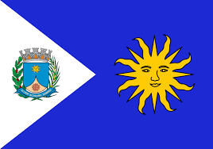

Confira nossa lista das 10 melhores cidades de SP!
As 10 Melhores Cidades do Estado de São Paulo

São Paulo é uma das 27 unidades federativas do Brasil. Está situado na Região Sudeste e tem por limites os estados de Minas Gerais a norte e nordeste, Paraná a sul, Rio de Janeiro a leste e Mato Grosso do Sul a oeste, além do Oceano Atlântico a sudeste. É dividido em 645 municípios e sua área total é de 248 222,362 km², o que equivale a 2,9% da superfície do Brasil, sendo pouco maior que o Reino Unido. Sua capital é o município de São Paulo e seu atual governador é João Doria.
SUMÁRIO
10° Posição-9° Posição-
8° Posição-
7° Posição-
6° Posição-
5° Posição-
4° Posição-
3° Posição-
2° Posição-
1° Posição-
10° Ilha solteira
Ilha Solteira é um município brasileiro no interior do estado de São Paulo. Localizando-se a uma latitude 20º25'58" sul e a uma longitude 51º20'33" oeste, estando a uma altitude de aproximadamente 335 metros. Tal localização, próximo ao encontro dos rios Tietê e Paraná e à divisa com o Estado do Mato Grosso do Sul, é uma das mais importantes da hidrovia Tietê-Paraná, principal meio de transporte do Mercosul. Sua população estimada em 2018 era de 26 582 habitantes. Possui uma área de 659,4 km².
O município é um dos 24 que contam com campus da Universidade Estadual Paulista "Júlio de Mesquita Filho". O campus UNESP de Ilha Solteira oferece 8 cursos de graduação e 8 cursos de pós-graduação, em torno da qual existe um grande centro de pesquisa responsável pelo desenvolvimento da tecnologia elétrica. Tal característica contribui para o fortalecimento do município como um polo tecnológico. Há de se ressaltar, também, que a cidade de Ilha Solteira possui o décimo melhor IDH entre os municípios paulistas.
Ilha Solteira é um dos 29 municípios paulistas considerados estâncias turísticas pelo Estado de São Paulo, por cumprirem determinados pré-requisitos definidos por Lei Estadual. Tal status garante a esses municípios uma verba maior por parte do Estado para a promoção do turismo regional. Também, o município adquire o direito de agregar junto a seu nome o título de Estância Turística, termo pelo qual passa a ser designado tanto pelo expediente municipal oficial quanto pelas referências estaduais. Assim, a cidade dispõe de hotéis, pousadas e casas de veraneio para aluguel, oferecendo também boas opções de restaurantes que servem pratos típicos da região.

9° Santana de Parnaíba
Santana de Parnaíba é um município do estado de São Paulo, localizado na Zona Oeste da Região Metropolitana de São Paulo, em conformidade com a lei estadual nº 1.139, de 16 de junho de 2011 e consequente Plano de Desenvolvimento Urbano Integrado da Região Metropolitana de São Paulo (PDUI).
Em 1580, Susana Dias, neta do cacique Tibiriçá, juntamente com seu filho, Capitão André Fernandes, fundou uma fazenda à beira do Rio Anhembi (atual Rio Tietê), a oeste de São Paulo, próximo à cachoeira denominada pelos indígenas como "Parnaíba" (lugar de muitas ilhas).
Devido a sua posição estratégica no vale do Rio Tietê, tornou-se ponto de partida das bandeiras que seguiam rumo ao Oeste Paulista e ao Mato Grosso. Em 1625, o povoado foi elevado à condição de vila, com a correspondente criação do município.

8° Santo André
Santo André é um município brasileiro da Região do Grande ABC, localizado na Zona Sudeste da Grande São Paulo, parte da Região Metropolitana de São Paulo, em conformidade com a lei estadual nº 1.139, de 16 de junho de 2011 e, consequentemente, com o Plano de Desenvolvimento Urbano Integrado da Região Metropolitana de São Paulo (PDUI).
Sua população estimada para 1.º de julho de 2020 era de 721 368 habitantes, ocupando uma área de 175,782km².
Santo André é a décima quinta cidade brasileira mais desenvolvida, e a oitava cidade mais desenvolvida do estado de São Paulo, segundo a ONU. É também a quinta melhor cidade do país onde criar filhos.

7° Araraquara
Araraquara é um município no interior do estado de São Paulo, no Brasil. O município é formado pela sede e pelos distritos de Bueno de Andrada e Vila Xavier. Sua população, conforme estimativas do IBGE de 2020, era de 238 339,correspondendo em uma densidade populacional de 235,2 habitantes/km².
Com uma área territorial de 1.003,625 km² é o 38º maior município do estado e o 1402º do país. Localizada a 21º47'40" de latitude sul e 48º10'32" de longitude oeste, a uma altitude de 664 metros, Araraquara situa-se a 43 quilômetros do centro geográfico (Obelisco) do Estado de São Paulo, e a 270 quilômetros da capital estadual. É o 37º município mais populoso do estado e o 128º mais populoso do país.
Encontra-se conurbado com Américo Brasiliense na área urbana contínua. Araraquara é um polo regional, sediando a Região Geográfica Intermediária (26 municípios) e Região Geográfica Imediata (17 municípios) ao seu entorno.
6° Vinhedo
Vinhedo é um município brasileiro no interior do estado de São Paulo. Localiza-se na micro e mesorregião de Campinas, a 75 quilômetros da capital paulista. Com uma população de 72 550 habitantes segundo o censo demográfico do Instituto Brasileiro de Geografia e Estatística (IBGE) de 2015, destaca-se por ser um dos municípios com maior Índices de Desenvolvimento Humano (IDH) do país.
A região do planalto paulista era habitada por diversos grupos indígenas, alguns, provenientes do litoral, que buscavam refúgio das guerras e da escravidão movidas pelos colonizadores ibéricos. Outros, como grupos de Tupi-Guaranys e Jês (como os Kaigang e os Kayapó meridionais), moravam na região desde antes da colonização.
Com a chegada de europeus ao continente sul-americano, a região foi percorrida pelas Bandeiras, que ocupavam terras consideradas inexploradas e caçavam índios para trabalho escravo, bem como buscavam recursos naturais como madeiras nobres, ouro e pedras preciosas, durante o século XVII. Para isso, as tribos indígenas foram dizimadas ou expulsas da região. Escravos africanos foram introduzidos para ajudar forçadamente nas Bandeiras ou trabalhar nas recém-criadas lavouras de subsistência que iam se formando no caminho para Goyáz.
5° Valinhos
Valinhos é um município brasileiro do estado de São Paulo. Está localizado, estrategicamente, na Região Metropolitana de Campinas e já foi distrito de Campinas. Sua população, conforme estimativas do IBGE de 2019, era de 129 193 habitantes e sua área territorial é de 148,538 km².
Conhecida como a Capital do Figo Roxo, Valinhos é hoje também lembrada pela grande produção de goiaba, bem como por ser a cidade natal do compositor, cantor e ator Adoniran Barbosa.
Nascido no dia 6 de agosto de 1910, Adoniran Barbosa foi um dos artistas mais consagrados e de referência no âmbito do samba, tendo feito história na cidade de São Paulo com a composição da música Trem das Onze; cidade na qual viria a falecer em 23 de novembro de 1982.

4° Jundiaí
Jundiaí é um município brasileiro no interior do estado de São Paulo. Localiza-se a 23º11'11" de latitude sul e 46º53'03" de longitude oeste, a uma altitude de 762 metros. Dista 57 quilômetros de São Paulo. Conforme dados do Instituto Brasileiro de Geografia e Estatística (IBGE) de 2019, sua população era de 418 962 habitantes,[5] ficando na 15° posição entre os municípios mais populosos do estado, sendo o 6º maior do interior paulista. Também é o 59° maior do Brasil, sendo maior que quatro capitais estaduais. Seu nome é uma referência ao rio Jundiaí.
O município apresentou, em 2016, um produto interno bruto (PIB) de mais de 39,7 bilhões de reais, colocando o município na 18.° posição em todo o país, à frente de dez capitais, sendo o 7.º município mais rico do Estado de São Paulo Em 2013, seu índice de desenvolvimento humano atingiu 0,822, levando a cidade à 11.ª melhor posição do Brasil e à 4.
melhor do estado. Segundo a Federação das Indústrias do Estado do Rio de Janeiro (FIERJ), Jundiaí é a 9.ª cidade com maior qualidade de vida do Brasil, apresentando um Índice FIRJAN de Desenvolvimento Municipal de 0,8892 em 2013. Também é um dos municípios mais seguros do país, com um risco de homicídio de 6,88 por 100 mil habitantes (índice de 2012), além de também estar em primeiro lugar em saneamento básico no ranking do Instituto Trata Brasil, entre as cidades brasileiras acima de 300 000 habitantes. A partir da década de 1990, no entanto, houve um crescimento no nível de desigualdade social.

3° Santos
Santos é um município portuário sede da Região Metropolitana da Baixada Santista, localizado no litoral do estado de São Paulo, no Brasil. Com a maior participação econômica da citada região, abriga o maior porto da América Latina,[11] o principal responsável pela dinâmica econômica da cidade ao lado do turismo, da pesca e do comércio,[12] ocupando a 5ª colocação entre as não capitais mais importantes para a economia brasileira[13] e 10ª colocada segundo a qualidade de vida.
A cidade é sede do poder executivo paulista todo dia 13 de junho (capital simbólica de São Paulo)[15] e não apenas sede de diversas instituições de ensino superior como também da mais antiga entidade geral estudantil do Brasil, o Centro dos Estudantes de Santos.
Santos possui uma economia crescente. Em 2016, a cidade era a 33ª mais rica do país, com produto interno bruto de 21 954 556,74 de reais. Durante um bom tempo, sua economia centrou-se na comercialização do café;[16] em 1922 foi inaugurada a Bolsa Oficial do Café, onde eram negociadas riquezas do mercado cafeeiro para o país,[17] e que resultou no atual Museu do Café abrigado no local atualmente conhecido como Centro Histórico, espaço que promove exposições sobre a trajetória do produto pelo Brasil e pela cidade e que é decorado com obras do artista Benedito Calixto.[18]

2° Águas de São Pedro
Águas de São Pedro é um município brasileiro do estado de São Paulo, distante 187 quilômetros de sua capital. Ocupa uma área de 3,61 km², sendo o menor município paulista e o segundo menor município brasileiro em extensão territorial, sendo maior apenas que Santa Cruz de Minas (MG).
O seu Índice de Desenvolvimento Humano (IDH) é de 0,854, sendo o segundo melhor de São Paulo, como também o segundo melhor do Brasil, sendo superado por São Caetano do Sul, no mesmo estado.
Águas de São Pedro foi emancipado de São Pedro na década de 1940. Atualmente, é formado pelo município de Águas de São Pedro, sendo a sede seu único distrito, subdividido ainda em seus quatro bairros.

1° São Caetano do Sul
São Caetano do Sul é um município brasileiro do estado de São Paulo, na mesorregião Metropolitana de São Paulo e microrregião de São Paulo. Está localizado na Zona Sudeste da Grande São Paulo, em conformidade com a lei estadual nº 1.139, de 16 de junho de 2011 e, consequentemente, com o Plano de Desenvolvimento Urbano Integrado da Região Metropolitana de São Paulo (PDUI).
É a cidade com o melhor IDH do Brasil (PNUD/2010), e também com o 48º maior PIB brasileiro. A população aferida no Censo de 2010 foi de 149.263 habitantes. A estimativa de população, calculada pelo IBGE com data de referência 1 de julho de 2019, foi de 161 127 habitantes. A área total da cidade é de 15,331 km², o que resulta numa densidade demográfica de 9.736,03 hab/km² (Censo de 2010).
É intensamente conurbada com São Paulo, Santo André e São Bernardo do Campo, fazendo com que se percam os limites físicos entre as cidades. São Caetano do Sul, juntamente com Ferraz de Vasconcelos, é uma das duas cidades do estado de São Paulo que não são atravessadas por nenhuma rodovia estadual ou federal.